화재복구청소 (화재냄새제거) 🔥
화재피해로부터 새로운 출발을 도와드립니다. 당사는 화재냄새제거 및 공장/클린룸 화재복구청소를 전문으로 하고 있습니다.
화재복구청소의 중요성
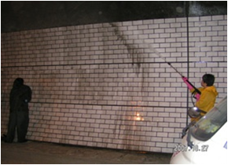
화재로 인해 손실된 건물이 화재피해로부터 빠르게 복구하여 새로운 출발을 할 수 있도록 도와드립니다.
특히 화재 후 발생하는 유독성 냄새와 잔여 폐기물 등은 고객님의 건강과 직결되는 부분으로, 신속하고 완벽한 처리가 요구됩니다.
청소범주
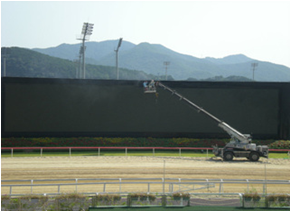
- 화재잔여물 청소 (화재 폐기물 처리)
- 건물의 재사용을 위한 준비청소
- 벽면 및 천장 청소
- 바닥청소 / 잔여물 제거 / 고압세척
- 건물 구조물 청소 / 화재냄새 제거 (피톤치드)
- 건물 주변 청소 및 방역 실시
화재청소 공정
1. 분진 제거
화재로 발생한 미세 분진을 전문 장비로 흡입 및 제거합니다.

2. 고압 청소
고압 세척을 통해 표면에 남아있는 그을음과 오염 물질을 깨끗하게 제거합니다.

3. 외벽 청소
건물 외부 그을음 및 오염물질을 제거하여 건물의 외관을 복원합니다.
4. 닥트 청소
화재로 오염된 닥트 내부를 전문적으로 청소하여 공기 흐름을 개선합니다.

5. 세탁 지원
복구 가능한 의류 및 직물류의 세탁 및 소독을 지원합니다.
화재청소는 일반 청소와 다른 전문 분야이며, 그 중에서도 그을음 제거는 난이도가 높고 가장 중요한 공정입니다. 신속히 인체에 유해한 화학물질인 분진을 제거해야 하기에 고객 불만이 가장 많이 발생하는 과정입니다.
청소과정
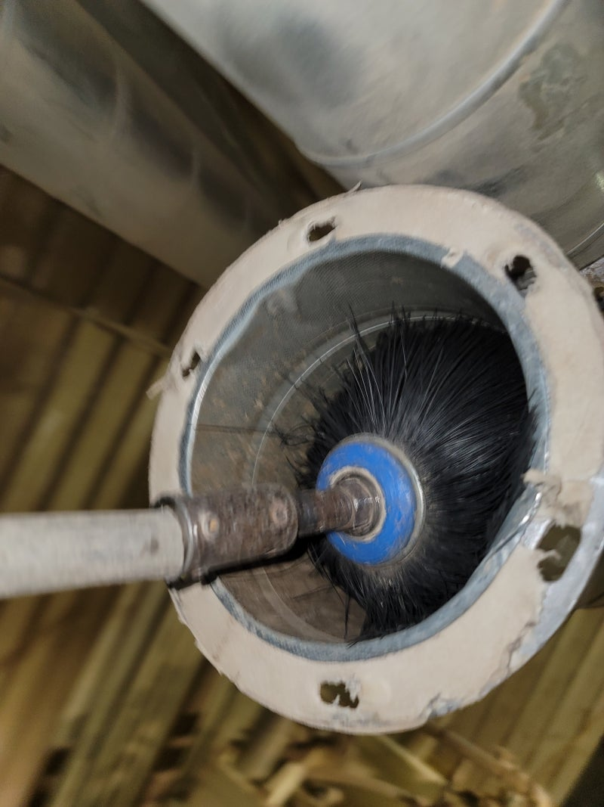
정밀 진단 및 초기 오염물 제거
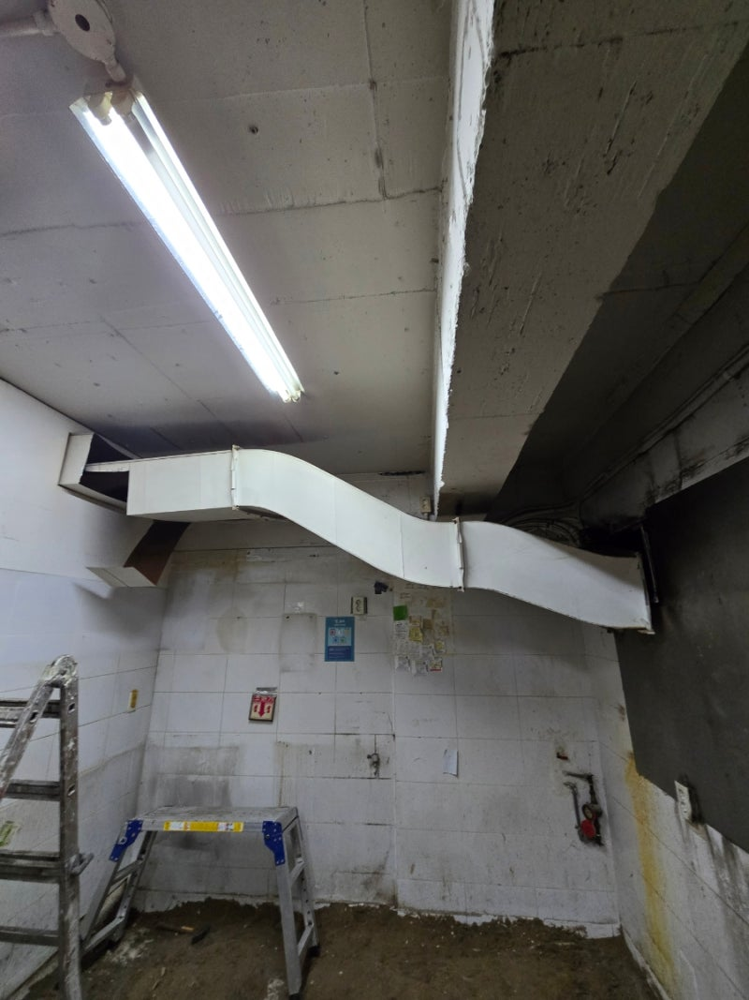
전문 약품을 이용한 그을음 제거
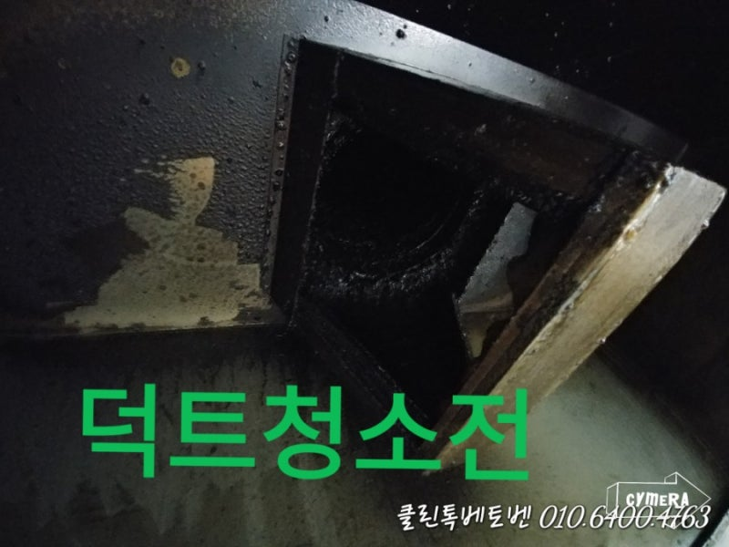
고압 세척 및 건조
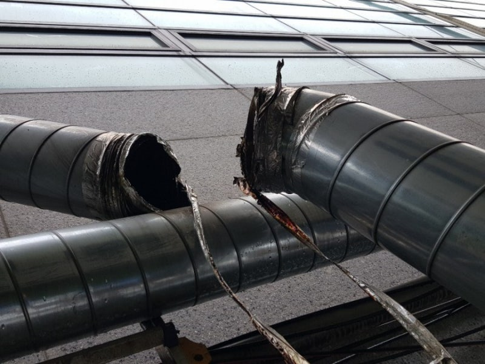
닥트 내부 전문 청소
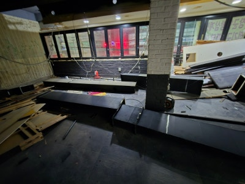
피톤치드 연막 소독
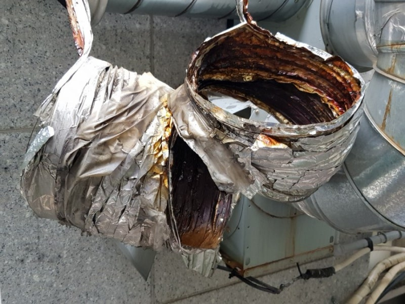
최종 점검 및 마무리
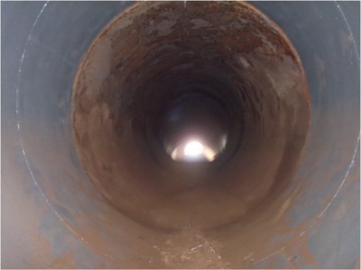
방역 및 환경 개선
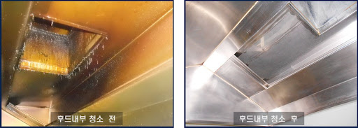
폐기물 처리

고객 만족도 확인
청소 전후 사진
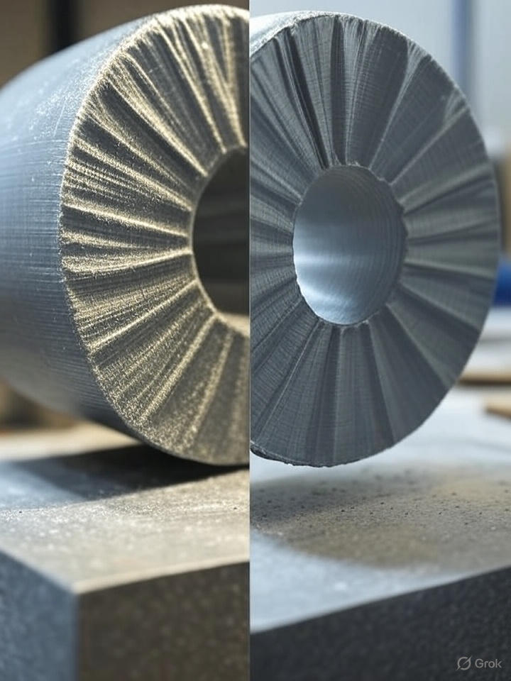
청소 전
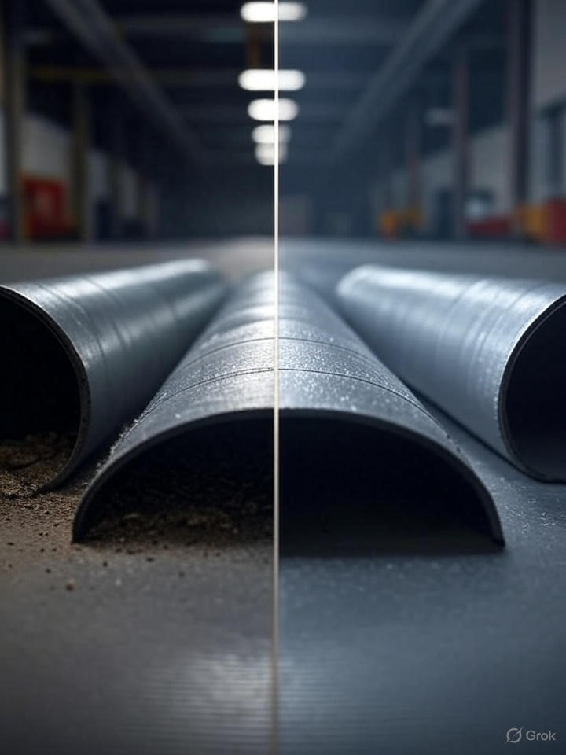
청소 후
거실 화재 그을음 제거
청소 전
청소 후
주방 덕트 오염 제거
청소 전
청소 후